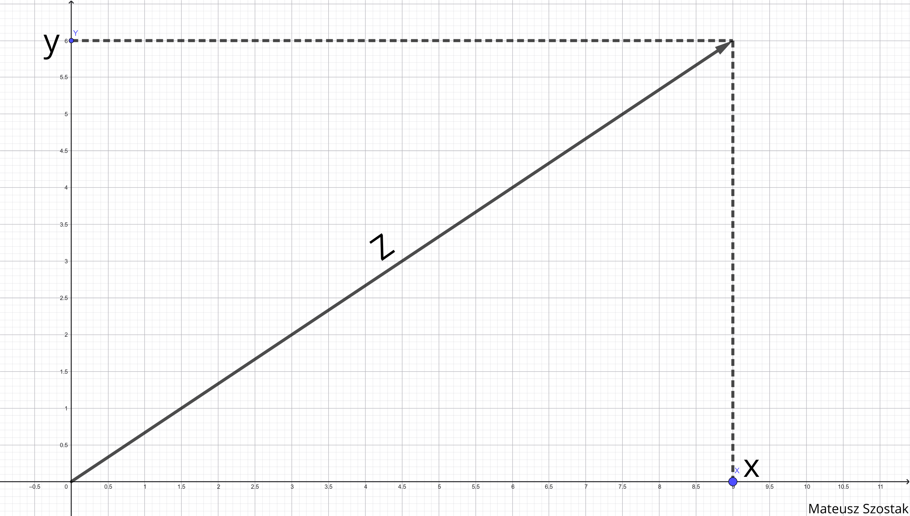
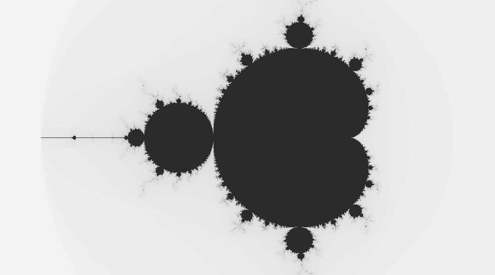
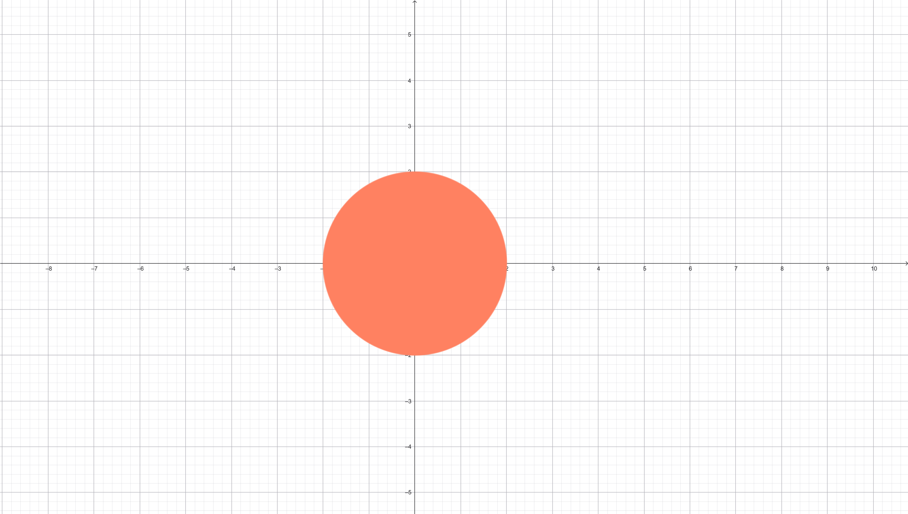
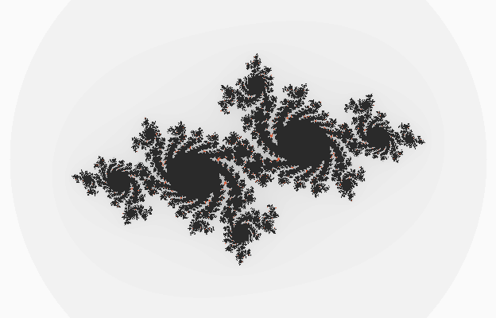

Autor: Mateusz Szostak
Geometria
Nieskończoności
Cześć! Chcę Ci pokazać coś fascynującego - fraktale. To takie wzory, które powtarzają się w nieskończoność i tworzą naprawdę niesamowite kształty.
Fraktale to nie tylko matematyka - widzisz je codziennie. Aloes wielkolistny, płatek śniegu, liście paproci, chmury czy linia brzegowa – wszystko to ma fraktalną strukturę. Nawet kalafior romanesco w sklepie to idealny przykład fraktalu z natury.
Fraktale mają też praktyczne zastosowania - dzięki nim tworzymy realistyczne krajobrazy w grach komputerowych, kompresować "upakować" zdjęcia, projektujemy anteny w smartfonach, a nawet analizujemy zdjęcia medyczne.


Najważniejsza cecha fraktali to samopodobieństwo - jeśli powiększysz dowolny kawałek, wygląda tak samo jak całość. Zbiór Mandelbrota ma w sobie nieskończenie wiele miniaturowych kopii samego siebie, schowanych w głębszych warstwach. Im bardziej przybliżysz, tym więcej tego widzisz - nigdy się nie kończą. Zaraz pokażę Ci fraktal, który mnie zafacynował: zbiór Mandelbrota.
Zbiór Mandelbrota
Nazwa pochodzi od odkrywcy Benoîta Mandelbrota (1924-2010). Urodził się w Warszawie, później mieszkał i studiował we Francji oraz USA. Przez wiele lat pracował w IBM, gdzie badał iteracje funkcji zespolonych. Jako matematyk rozsławił geometrię fraktalną, wynalazł i spopularyzował pojęcie „łac. fractus - fraktal”. W 1979 roku odkrył zbiór zwany „zbiorem Mandelbrota”, który nazywany jest czasem także „odciskiem palca Pana Boga”. Mandelbrot pokazał także liczne zastosowania w różnych obszarach życia (takich jak m.in. botanika, ekonomia, grafika komputerowa, meteorologia, hydrologia, medycyna, ale też nauki społeczne czy lingwistyka). Zbiór ten jest wykorzystywany dziś w grafice komputerowej oraz programowaniu. Jest świetnym testem wydajności mocy obliczeniowej komputerów.
Ten fraktal nie jest obiektem, który można bezpośrednio zobaczyć w naturze, żyje on na płaszczyźnie liczb zespolonych.
Liczba zespolona to punkt na płaszczyźnie, który ma dwie współrzędne - część rzeczywistą (oś x) i część urojoną (oś y).
z - liczba zespolona.
x - pierwsza współrzędna (Re).
y - druga współrzędna (Im).
i - jednostka urojona (i2 = -1).

z0 - start - początek - zaczynamy od zera - nie ma żadnej "historii".
zn - wartość po n-tym kroku (po n powtórzeniach przepisu).
zn+1 - wartość w następnym kroku (wynik po poprzednim przeliczeniu).
n - numer kroku {0, 1, 2, 3...}.
c - punkt na płaszczyźnie zespolonej.
zn2 - "podnosimy" aktualny stan do kwadratu (na płaszczyźnie liczba zespolonych oznacza powiększanie i obrót).
W praktyce zastosowanie powyższego wzoru to powtarzanie tej samej czynności wielokrotnie, czyli zapętlanie - co możemy określić iteracją.

Przetwarzanie Danych
Jak komputer stosuje ten wzór? Krok po kroku
Aby narysować fraktal, komputer sprawdza każdy piksel osobno. Dla dowolnego punktu wykonuje iterację i sprawdza, czy otrzymane wartości należą do zbioru "ucieczki" - który oznaczam literą U. Zbiór U to zbiór wszystkich punktów płaszczyzny układu współrzędnych poza punktami należącymi do koła o środku w punkcie (0,0) i promieniu długości 2.

- Program wybiera punkt C (piksel).
- Startuje od Z0 = 0.
- W pętli wykonuje iteracje: Zn+1 = Zn2 + C.
- Powtarza kroki określoną liczbę razy.
- Start: Z = 0
- Krok 1: 02 + 1 = 1 (nie należy do zbioru U) Z1 = 1; Z1(1,0)
- Krok 2: 12 + 1 = 2 (nie należy do zbioru U) Z2 = 2; Z2(2,0)
- Krok 3: 22 + 1 = 5 (należy do zbioru U) Z3 = 5; Z3(5,0)
- Krok 4: 52 + 1 = 26 (należy do zbioru U) Z4 = 26; Z4(26,0)
Wniosek: od kroku 3, wszystkie kolejne punkty należą do zbioru U.
- Start: Z = 0
- Krok 1: 02 + (-1) = -1(nie należy do zbioru U) Z1 = -1; Z1(-1,0)
- Krok 2: (-1)2 + (-1) = 0 (nie należy do zbioru U) Z2 = 0; Z2(0,0)
- Krok 3: 02 + (-1) = -1 (nie należy do zbioru U) Z3 = -1; Z3(-1,0)
- Krok 4: (-1)2 + (-1) = 0 (nie należy do zbioru U) Z4 = 0; Z4(0,0)
- Krok 5: 02 + (-1) = -1 (nie należy do zbioru U) Z5 = -1; Z5(-1,0)
Wniosek: w każdym kroku punkt nie należy do zbioru U.
Zbiór Julii
Zbiór Julii — bliski krewny Mandelbrota
Wzór jest ten sam, ale pytanie inne. W zbiorze Mandelbrota sprawdzamy, dla jakich wartości c kolejne obliczenia nie trafiają do zbioru U, zaczynając zawsze od punktu 0. W zbiorze Julii postępujemy odwrotnie - ustalamy c i sprawdzamy, dla jakich punktów startowych z0 = 0 obliczenia nie trafiają do zbioru U.
Każda wartość c daje zupełnie inny kształt. Dla wartości c z wnętrza zbioru Mandelbrota zbiory Julii są zazwyczaj spójne i pełne - tworzą jeden, połączony obiekt. Dla wartości c spoza zbioru rozpadają się na rozproszone punkty, przypominające pył. Dlatego zbiór Mandelbrota można traktować jako mapę całej rodziny zbiorów Julii - każdy punkt na tej mapie odpowiada innemu kształtowi.
z0 = 0, c zmienia się (każdy piksel oznacza inne c)
c = stała, z0 zmienia się (każdy piksel oznacza inne z0)

Regulacja Parametrów
Stwórz własny fraktal
W tej sekcji możesz samodzielnie eksperymentować: wybierz wykładnik [2,3,4,5], ustaw wartość C i obserwuj, jak zmienia się kształt fraktala. Jeśli chcesz zacząć szybciej, skorzystaj z gotowych przykładów poniżej.
Wnioski
Moje wrażenia
Im więcej czasu spędzam z fraktalami, tym bardziej przekonuję się, że matematyka potrafi naprawdę zachwycać - to właśnie ta geometria nieskończoności wciąga najbardziej. Zasada jest prosta - a jednak zbiór Mandelbrota za każdym razem odkrywa przede mną coś nowego. To chyba najlepszy dowód na to, że w matematyce nigdy nie dociera się do końca.
Celem mojego projektu było pokazanie, że matematyka to nie tylko teoria z zeszytu - można ją zobaczyć i samodzielnie zbadać. Nawet kilka równań może prowadzić do złożonych, pięknych struktur. Jeśli ta praca wzbudzi w kimś większe zainteresowanie matematyką, uznam, że cel został osiągnięty.
Bibliografia
Bibliografia
- Wikipedia (PL) - Zbiór Mandelbrota: pl.wikipedia.org/wiki/Zbiór_Mandelbrota
- Wikipedia (PL) - Zbiór Julii: pl.wikipedia.org/wiki/Zbiór_Julii
- Wikipedia (PL) - Liczby zespolone: pl.wikipedia.org/wiki/Liczby_zespolone
- Wikipedia (PL) - Fraktal: pl.wikipedia.org/wiki/Fraktal
- Wikipedia (PL) - Samopodobieństwo: pl.wikipedia.org/wiki/Samopodobieństwo
- Zdjęcie kalafiora romanesco "romanesco_kalafior.jpg": By Ivar Leidus - Own work, CC BY-SA 4.0, commons.wikimedia.org/w/index.php?curid=100133434
- Zdjęcie chmury "chmura_fraktal.jpg": Autorstwa NASA - http://earthobservatory.nasa.gov/Newsroom/NewImages/images.php3?img_id=16844, Domena publiczna, commons.wikimedia.org/w/index.php?curid=756917
- Zdjęcie aloesu "aloes_fraktal.jpg": Autorstwa Sam - Praca własna, CC BY-SA 4.0, commons.wikimedia.org/w/index.php?curid=40888693
- Zdjęcie paproci "paproc_fraktal.png": Autorstwa Adam Mihályi - Fractal_fern1.jpg, made by António Miguel de Campos - en:User:Tó campos, Domena publiczna, commons.wikimedia.org/w/index.php?curid=3161370
- Zdjęcie płatka śniegu "platek_sniegu.jpg": Pixabay, pixabay.com/pl/illustrations/kryształ-lodu-płatek-śniegu-śnieg-64157/
- Aleteia (PL) - Benoît Mandelbrot. Kim jest bohater Google Doodle i co łączyło go z Polską oraz… Bogiem?: pl.aleteia.org/2020/11/20/benoit-mandelbrot-kim-jest-bohater-google-doodle-i-co-laczylo-go-z-polska-i-bogiem/
- Mandelbrot, B. B. (1982). The Fractal Geometry of Nature. W. H. Freeman and Company, New York.